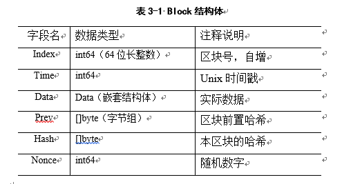
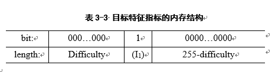
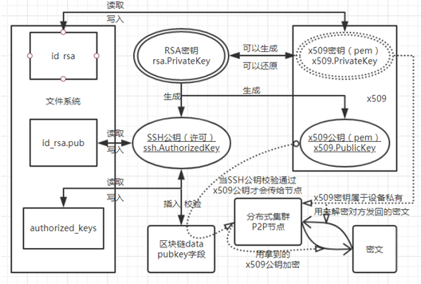
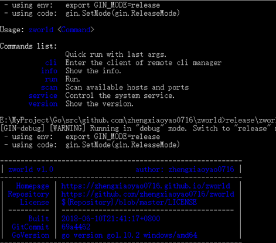
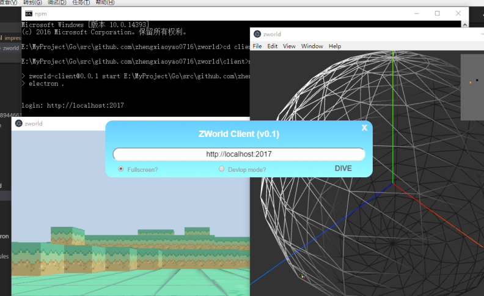
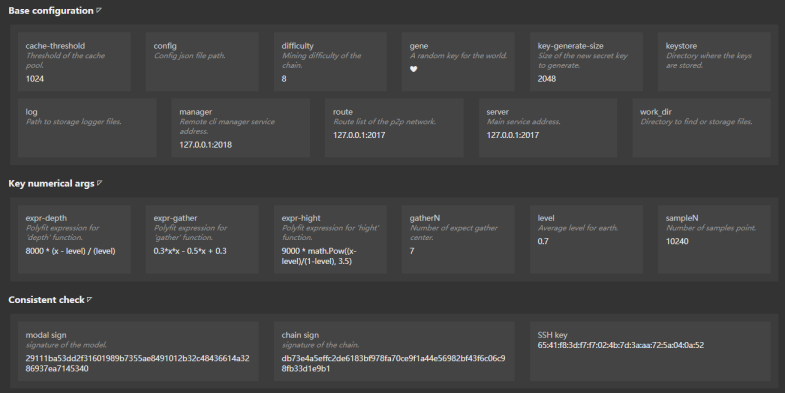
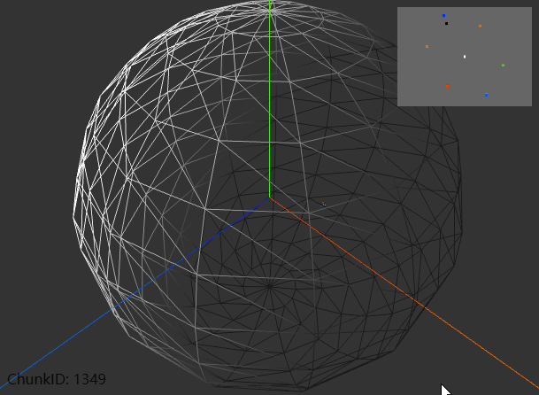
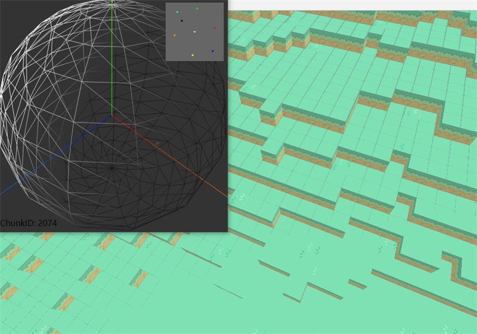
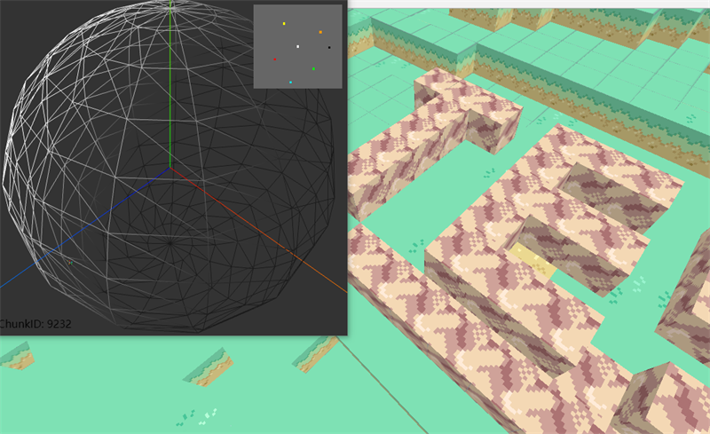
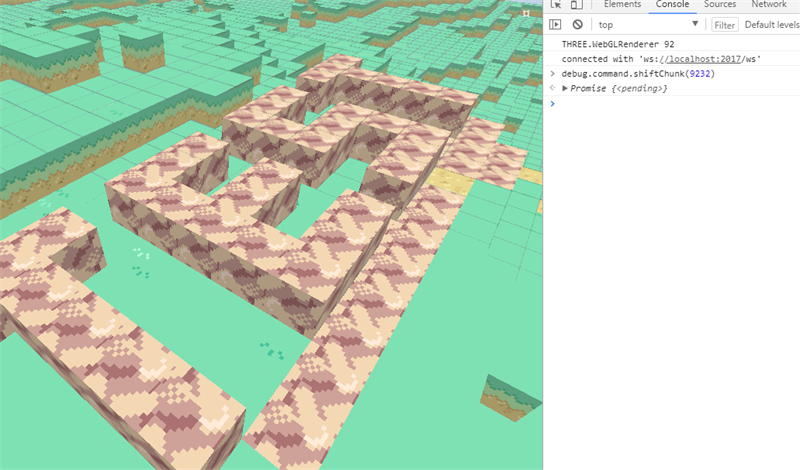

个人资料与选题信息：
|
姓 名 |
陈正 |
|
班 级 |
计1403 |
|
学 号 |
41455077 |
|
题 目 |
分布式类地球模拟系统 |
|
指导教师 |
刘宏岚 |
何为
分布式
类
地球
模拟系统？
第一
规模
足够大
与
地球
的
比例尺
超过
100%
第二
用户
足够多
可负载用户量
无上限
（理论上~）
区块划分, 曲面投影, 地形生成, 参数修正
分布式, P2P, 去中心化, 区块链, ssh-rsa
主要
原理
关键词
-
球体建模、地形生成
-
分布式、去中心化
-
区块链共识、安全认证
具体
技术
与
手段
-
Go、Python
与
Javascript
多语言协作
-
TCP、HTTP
与
WebSocket
多服务架设
-
Windows、MacOS
与
Linux
等多平台部署
今年三月初
新学期开始
我临时辞掉实习
回学校做毕业设计
截至目前已经两个月余
在
导师
学长
同学
的帮助下，我完成了本次
毕业设计
下面，我将从
客观模块
主观模块
与
辅助模块
三个方面，展示我做的
工作
，并在最后展示我的
成果
论文 P16 - P17.
球面建模：比例尺>100%，曲面到平面投影
论文 P17 - P19.
地形生成：提取地形特征，生成噪声图像
2. 主观模块
区块链
Everipedia
EOS
ssh-rsa
数据缓存
Block结构体

目标特征值与挖矿难度关系
目标特征指标的内存结构

TileData结构体
公钥密钥关系及加解密认证原理

3. 辅助模块
Peer-to-Peer
WebGL
WebSocket
HTTP
去中心化
Desktop
Browser
服务端
论文 P25 - P26.

客户端
论文 P26 - P28.

网页端
论文 P28 - P29.

#. It's Show Time~

系统A ChunkID=2074

系统B ChunkID=9232

系统A 传送到B附近
